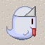
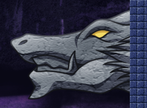
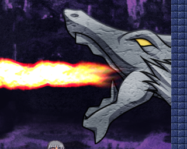

倒すのに必要な攻撃回数、および受けるダメージは一部不明か、もしくは推測に 基づいています(ある種の装備品と敵の組み合わせは同じステージには出現しないの で)。
各種装備品は一文字の略称で表しています:
美咲、香奈恵など、特定のステージにしか登場しないボスキャラはステージ別攻略で取り扱います。
| グラフィック |  |
|---|---|
| 出現するステージ | 1-1, 1-3, |
| 無 | ヘ | 茶 | ハ | 鎖 | 黒 | |
|---|---|---|---|---|---|---|
| 倒すのに必要な攻撃回数 | 1 | 1 | 1 | 1 | 1 | 1 |
| 受けるダメージ | 2 | 1 | 1 | 1 | 1 | 1 |
無装備でも一撃で倒せる最弱の敵です。地面の少し上を浮遊しているものと、空 中を浮遊しているものの2タイプがあります。前者は足場の端まで来ると方向転換し ます。後者は障害物に出くわさない限り方向転換しません。ただし、すぐ下に足場の ある地形に差し掛かると前者の性質を持つようになります。
白お化けがすぐ上にいる足場に飛び移る際は、着地前下投げで排除しつつ着地し ます。それが不可能な地形でも、足場の端ギリギリに着地すれば白お化けに当たるこ とはありません。たとえば、以下の図のようにします:
このように、正確に操作している限りは完全に回避できるので、本質的にはあま り大きな障害にはならないといえます。ただし大量に出た場合は結構うざいです。
| グラフィック | |
|---|---|
| 出現するステージ | 3-4, |
| 無 | ヘ | 茶 | ハ | 鎖 | 黒 | |
|---|---|---|---|---|---|---|
| 倒すのに必要な攻撃回数 | 4 | |||||
| 受けるダメージ | 2 | 1 | 1 | 1 | 1 | 1 |
基本的に足場の上にいます。最初は白お化けと同じ 動きをしていますが、ダメージを与えたり、自機もしくは式神が一定範囲内(間に障 害物があっても無関係)に近づくと自機を緩やかに追尾してくるようになります。足 は遅いです。無装備だと倒すのに少し手間がかかるので、無視して逃げてしまう方が 得なこともあります。
| グラフィック |   |
|---|---|
| 出現するステージ | 3-8, 5-4 |
| 無 | ヘ | 茶 | ハ | 鎖 | 黒 | |
|---|---|---|---|---|---|---|
| 倒すのに必要な攻撃回数 | 20 | 10 | ||||
| 受けるダメージ | 3 |
壁に張り付いていて、上下にある程度ランダムに移動し、一定間隔で口を開け、 横一直線に炎を吐きます。炎を吐いている間は移動しません。炎を吐き終わった後は 少しの間口が開きっぱなしになります。口が開いている間しかダメージが通りません。 また、こちらがダメージを受けるのは炎だけで、本体には当たり判定がありません。
ある程度下の方で炎を吐いてくれた場合は、裏側に回ってしまえば口の中を攻撃 し放題になります。
手際よくやれば一回炎を吐かせただけで倒せます。